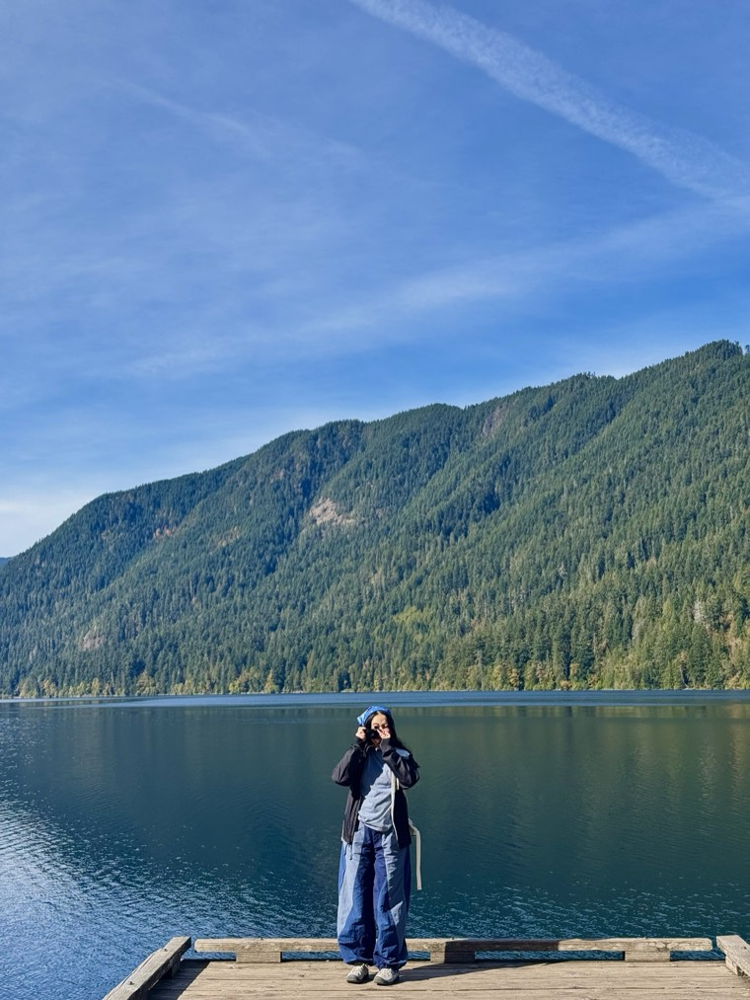

Asia Le, RN
I spent years at the bedside watching good care get stuck in bad workflows. Now I fix the workflows.
Oncology nurse, utilization management lead, product manager in the making. I work on the systems health plans use to decide care for Medicare Advantage, D-SNP (plans for people with both Medicare and Medicaid) and Medicaid members.
- 30%fewer review delays
- 50person rollout
- 50%faster record retrieval
- CMSaudit EMR lead
Case studies
- 01 · Shipped Getting 50 reviewers to one decision path Out-of-network reviews ran on word of mouth and manual checks across several systems. I led the fix with compliance, appeals and authorization.
- 02 · Shipped Closing the expedited loophole A well-meant workaround taught providers to mark routine requests urgent. After the fix, staff noticed about 90% fewer unnecessary expedited requests.
- 03 · Proposal The port nobody taught them to fix A discovery project on an oncology unit: why new nurses who passed their check-off still couldn't troubleshoot a port.
What's next
Also shipped
- CMS audit, EMR lead. Chosen by senior leadership to run records during the health plan's CMS audit: pre-audit case review, escalating documentation risk, and presenting records to federal auditors in real time. Record retrieval got 50% faster and audit findings fell 10%. Nominated for an Initiative Award.
- API-integrated EHR implementation. I represent my department, turning clinical review workflows into business requirements and end-user feedback for the delivery team.
- Urgent care intake redesign. As a scribe at CityMD, I helped redesign intake and discharge for 200+ daily visits, cutting wait times by 20%.
About

I started as a medical oncology nurse at Long Island Jewish Medical Center (Northwell Health), where I worked as charge nurse coordinating staffing and workflow on a high-acuity unit, precepted new nurses, and documented in Epic across nursing, medicine, pharmacy and case management.
Today I'm a Clinical Evaluation Manager in utilization management at VNS Health. I review Medicare Advantage, D-SNP and Medicaid cases in GuidingCare against CMS and state criteria, including MCG. The parts of the job I care most about are the workflows around the reviews: who does what, which system is the source of truth, and what happens when the rules are unclear.
Before nursing I studied biomolecular sciences at NYU Tandon, with coursework in statistics and Python, and co-authored a peer-reviewed book chapter: “Nanoparticulate systems for monitoring of therapeutic cells” (Academic Press, 2020).
- 4×
- 2
- 2020
Education: BS Nursing, NYU Rory Meyers College of Nursing · BS Biomolecular Sciences, NYU Tandon · MSN Nursing Education, Stony Brook University (in progress)
Credentials: New York RN · BLS · ONS/ONCC Chemotherapy Immunotherapy Certificate · ABCD Award, VNS Health (4×) · DAISY Award nominee, Northwell Health